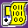

NOTE: THESE PAGES ARE MIRRORS OF HARRY'S SITE & NO SUPPORT IS
AVAILABLE FOR THEM.
Welcome to Harry Mulder's Gameboy Development. On this set of
pages, you will find the following:

Snippets of code and information to help you with your development.
Home of the Gameboy Tile Designer,
which you can use to make tilesets for your home-grown Gameboy projects.
 Home of the Gameboy Map Builder,
which you can use to make maps for your home-grown Gameboy projects.
Home of the Gameboy Map Builder,
which you can use to make maps for your home-grown Gameboy projects.
Support for both
GBTD and
GBMB, like specifications,
utilities and source.
Vanity strikes! Some info about me.
  This
GameBoy
Development Ring site is contributed by Harry Mulder. This
GameBoy
Development Ring site is contributed by Harry Mulder.
[Skip Prev][Prev][Next][Skip Next] [Random][Next 5][List Sites][Site Stats] Game Boy & Nintendo are trademarks of Nintendo Co., Ltd. of Kyoto, Japan. |
|---|